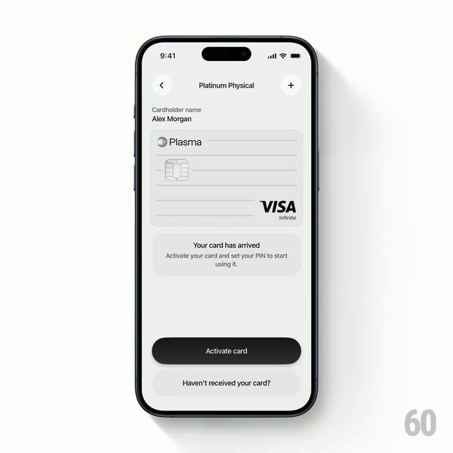
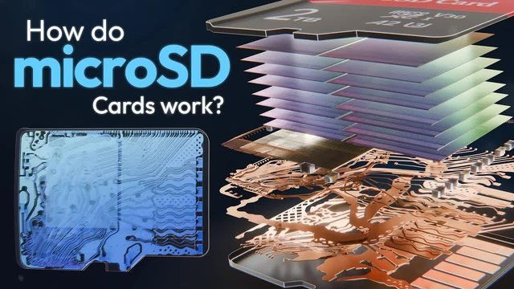
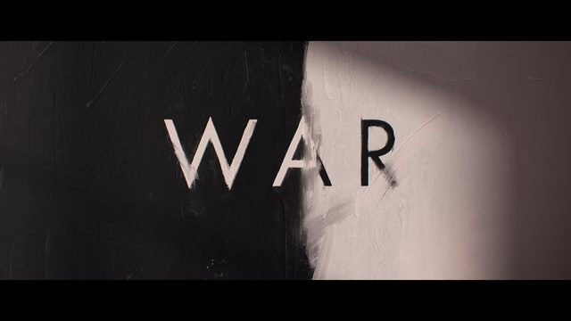
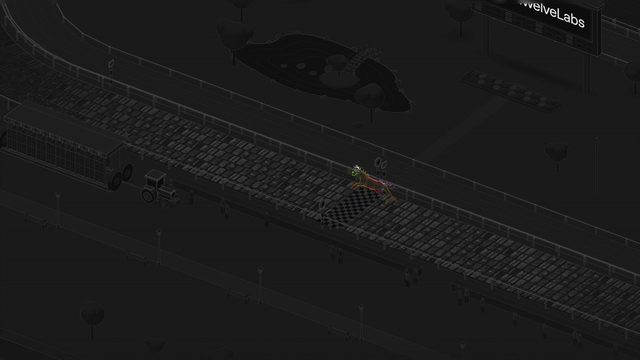
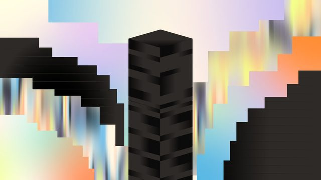

鱼知道 · 审美雷达周一至周六 15:00 · 周日精选
审美日报
动效、片头片尾、转场和节奏
每天挑 10 条视频制作上值得借的作品，先看过再选。点封面直接播放，喜欢就点心。
最新

周精选2026-11-01 审美周精选
从这周 6 份日报（60 条）里挑了 10 条。你 10-30 点过喜欢的两条 60fps UI 动效放在最前面，顺着这个方向又加了 jhey 的转场合集和旋钮数字；其余是片头、3D 讲解、字体和竖屏科普，类型分开。每条标明当时是看过完整视频还是只抽帧看了画面。本周最值得学在文末。喜欢就点心，有想法写在每条下面的「想法」框里
全部
- 周精选2026-11-01 审美周精选2026-11-01 周日 · 10 条 · 精选
 2026-10-31 审美日报2026-10-31 周六 · 10 条
2026-10-31 审美日报2026-10-31 周六 · 10 条
2026-10-30 审美日报2026-10-30 周五 · 10 条 2026-10-29 审美日报2026-10-29 周四 · 10 条
2026-10-29 审美日报2026-10-29 周四 · 10 条 2026-10-28 审美日报2026-10-28 周三 · 10 条
2026-10-28 审美日报2026-10-28 周三 · 10 条
2026-10-27 审美日报2026-10-27 周二 · 10 条
2026-10-26 审美日报2026-10-26 周一 · 10 条
周精选2026-10-25 审美周精选2026-10-25 周日 · 5 条 · 精选 2026-10-24 审美日报2026-10-24 周六 · 6 条
2026-10-24 审美日报2026-10-24 周六 · 6 条